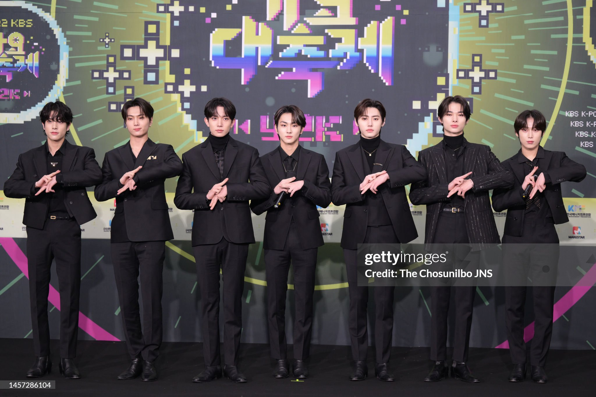

ENHYPEN
About Enhypen
Enhypen is a South Korean boy group formed by a survival show I-LAND. The group debuted on November 30th, 2020 under BELIFT LAB, and consists of 7 members: Yang Jungwon, Lee Heeseung, Jay (Park Jongseong), Jake (Sim Jaeyun ), Park Sunghoon, Sunoo (Kim Sunwoo), and Ni-ki (Nishimura Riki). The group name "ENHYPEN" symbolizes connection, discovery, and growth. EN-hyphen.
Why ENHYPEN?
The 7 members of ENHYPEN are known to have a warm connection with their fans, known as ENGENE. Every ENGENE's heart chooses a member as their bias, as each member has unique personality traits and holds a special place in a fan's heart.
- 7 Members
- Formed through I-LAND
- Known for their detailed lore, as 7 vampires, and strong performances
Members:
- Jungwon
- Heeseung
- Jay
- Jake
- Sunghoon
- Sunoo
- Ni-ki